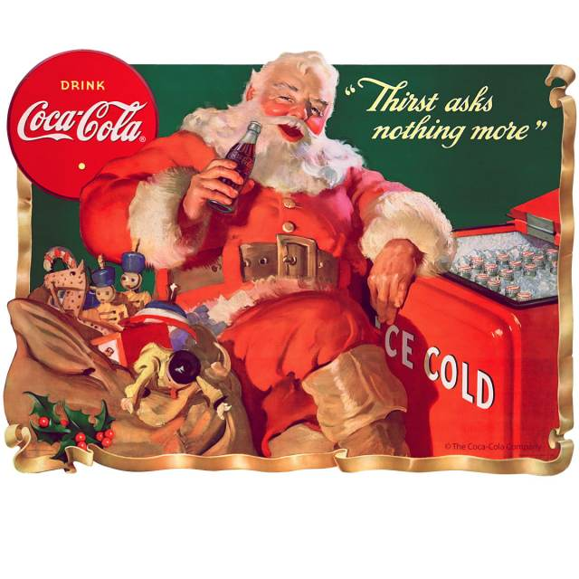
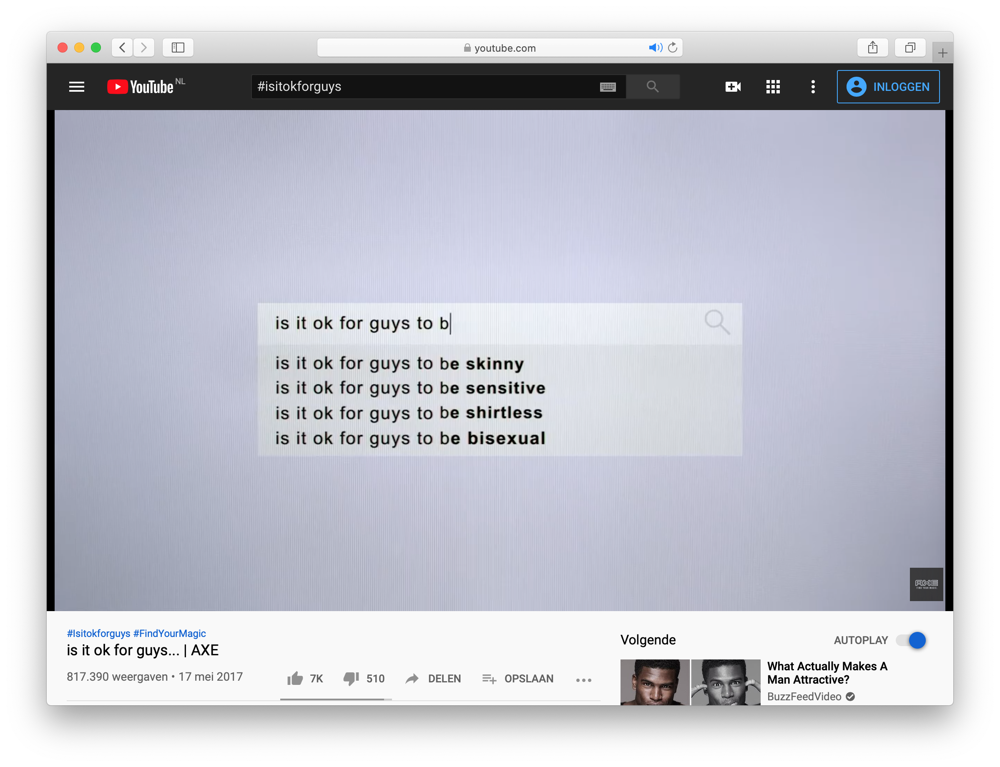
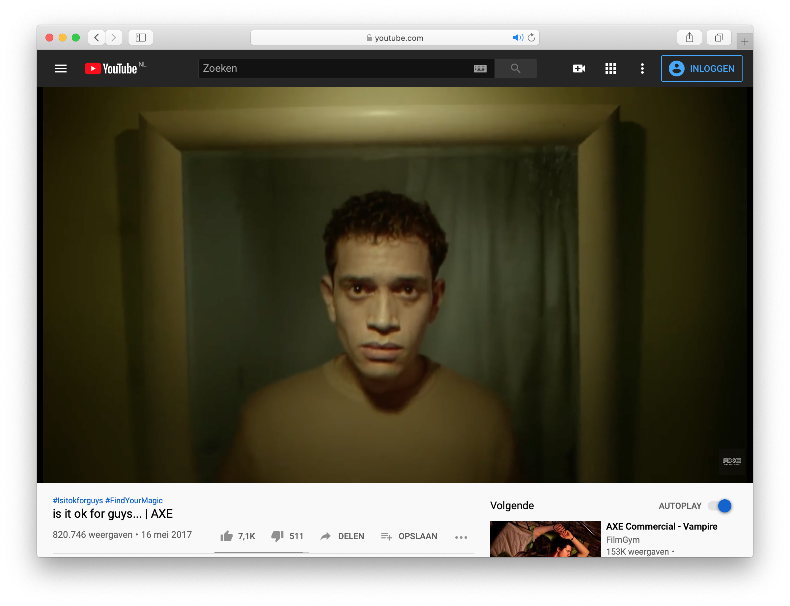

Ad Age Staff (2020) A Regularly Updated List Tracking Marketers’ Response To Coronavirus. AdAge. [online] Available at: < https://adage.com/article/cmo-strategy/regularly-updated-list-tracking-marketers-response-coronavirus/2244251>[Accessed 28 June 2020].
Ahmed, S., 2017. Living a Feminist Life. Durham and London: Duke University Press.
Alibhai-Brown, Y., 2018. Serena Williams backlash shows that successful women are treated like lesser humans - and it’s got to stop. inews. [online] Available at: https:// inews.co.uk/opinion/comment/serena- williams-us-open-outburst-backlash- successful-women-sexist-racist-cartoon-255472 [Accessed 28 June 2020].
Angwin, A., 2019. Losers Are Already Complaining About Australia’s First Bloody Brilliant Period Ad. Oyster Magazine. [online] Available at: < http://www.oystermag.com/2019/09/losers-are-already-complaining-about-australias-first-bloody-brilliant-period-ad/?fbclid=IwAR3UzbMHSWALtOAM-7c8U8GjClnnzaQ1cSJ-K60olvMvz5ZFgOe1fY03Q2jQ>[Accessed 28 June 2020].
ARK, [n.d.] About. pinknotpussy.club [online] Available from: < https://www.pinknotpussy.com/> [Accessed 28 June 2020].
Astor, M., 2017 Dove Drops an Ad Accused of Racism [online] The New York Times. Available at: < https://www.nytimes.com/2017/10/08/business/dove-ad-racist.html> [Accessed 28 June 2020].
Beauvoir de, S., 1949. The Second Sex. Translated by C. Borde and S. Malovany-Chevallier., 2009. London: Vintage
Black, S., 2019 Secret Deodorant Kicks off Partnership with U.S. Women’s National Soccer Team. Businesswire. [online] Available at: < https://www.businesswire.com/news/home/20190304005577/en/Secret-Deodorant-Kicks-Partnership-U.S.-Women%E2%80%99s-National>[Accessed 28 June 2020].
Bourton, L., 2020 Shamma Buhazza transforms Pinterest into a resource to decolonise design. It’s Nice That. [online] Available at: https://www.itsnicethat.com/features/shamma-buhazza-thread-of-inspiration-graphic-design-031220?utm_source=dailyemail&utm_medium=email&utm_campaign=intemail [Accessed 6 December 2020].
Criado Perez, C., 2019. Onzichtbare vrouwen. Translated from English by T. Heuvelmans, S. de Jong, M. Molegraad and S. Ridder. Amsterdam: Prometheus
Daughters of the Evolution, 2019. Lessons in Herstory. Clio awards. [online] Available from: < https://clios.com/awards/winner/digital-mobile/daughters-of-the-evolution/lessons-in-herstory-71437> [Accessed 28 June 2020].
Debord, G. (1967) The Society of the Spectacle. Translated from French by K. Knabb. Canada: Bureau of Public Secrets
Did they help? 2020. Find out how a company or celeb behaved during the Coronavirus pandemic. Did they help? [online] Available from:< https://didtheyhelp.com/> [Accessed 28 June 2020].
Dove UK, 2017. Celebrate the many shapes and sizes of beauty | Dove [video online] Available at: < https://www.youtube.com/watch?time_continue=46&v=CRiv2lgaX_U&feature=emb_title> [Accessed 28 June 2020].
ELLE UK (2014) Call Yourself A Feminist? This lot are loud and proud ELLE UK [online] Available at: < https://www.elle.com/uk/fashion/celebrity-style/articles/g23464/feminism-t-shirt-tom-hiddleston-benedict-cumberbatch-emma-watson/> [Accessed 28 June 2020]
Facebook Ad Library, 2020. Veet Nederland. Facebook Ad Library. [online] Available at: < https://www.facebook.com/ads/library/?active_status=all&ad_type=all&country=NL&impression_search_field=has_impressions_lifetime&view_all_page_id=1430742720555870> [Accessed 28June 2020].
Fahs, B., 2020 Burn It Down! Feminist Manifestos for the Revolution. London: Verso.
Friedan, B.,1963. The Feminine Mystique. London: Penguin.
Gay, R., 2014 Bad Feminist Essays New York: HarperCollins Publishers
Hassell, L. and Cheung, V., 2019. Design{H}ers, A celebration of Women in Design Today. Hong Kong: Viction:ary.
Janssen, M., 2017. ROOSJE KLAP 03/05/2017 17:41 A conversation with three KABK women. [online] Available from: < https://nabaemily.nl/roosje.html> [Accessed 28 June 2020].
Klein, N., 2000 No Logo. Toronto: Vintage Canada
Klein, N., 2005. NO LOGO Brands, Globalization & Resistance. Interviewed by Kelly Garner. [PDF] Media Education Foundation, [n.d.]
Kilbourne, J., 2020. Pandermonium - transcript - Jean Kilbourne. Interviewed by Katie Martell. [Documentary] 2020
MarketingActivo, 2019. SuperBowlAds - Bumble “The Ball is in Her Court” [online video] Available at: < https://www.youtube.com/watch?v=II0D_58VS4M> [Accessed 28 June 2020].
Martell K. (n.d.), Faux Feminism. Faux Feminism. [online] Available at: < https://www.fauxfeminism.com/> [Accessed 28 June 2020].
Martell, K., 2020. Pandering to the Pandemic. Katie Martell. [online] Available at: < https://www.katie-martell.com/blog/2020/5/18/pandering-to-the-pandemic-futurex-2020> [Accessed 28 June 2020].
McHardy, C., 2017. Is it ok for guys? Axe says YES. Unilever. [online] Available at: < https://www.unilever.com/news/news-and-features/Feature-article/2017/is-it-ok-for-guysaxe-says-yes.html> [Accessed 28 June 2020].
Monty, S. (2020) The COVID-19 Corporate Goodwill Google Doc. Google Doc [online] Available at: < https://docs.google.com/document/d/1q5hDjGi4eGF9eM694Dy-JoSLf_3elxQy3U8bgTYXNe4M/> [Accessed 28 June 2020].
Morgan, H., 2017. Period Blood Is Shown In Pad Ad For The First Time Ever. Oyster Magazine. [online] Available at: < http://www.oystermag.com/2017/10/period-blood-isshown-in-pad-ad-for-the-first-timeever/>[Accessed 28 June 2020].
Nicholas, T., 2019. The Society of the Spectacle What the Theory? Part 2: Récupération. Patreon. [online] Available at: < https://www.patreon.com/tomnicholas/posts?filters[tag]=scripts> [Accessed 28 June 2020].
Nissan USA, 2020. “Refuse To Compromise” Explained By Brie Larson | All-New Nissan Sentra [online video] Available at: < https://www.youtube.com/watch?v=1hh6dT3ffGA> [Accessed 28 June 2020].
Oerlemans, A., 2018 Onderzoek ‘femvertising’ geeft Dove gelijk. frank.news. [online] Available at:< https://www.frank.news/nl/article/marketing/onderzoek-femvertising-geeft-dove-gelijk.htmlfeed> [Accessed 28 June 2020].
Ong, J., 2019 Charlotte Rohde asks “what do typefaces have to say beyond the words they spell?” It’s Nice That [online] Available from: < https://www.itsnicethat.com/articles/charlotte-rohde-typefaces-graphic-design-220519> [Accessed 28 June 2020].
Powell, R., 2014. How Ads That Empower Women Are Boosting Sales and Bettering the Industry. AdWeek, [online] Available at: < https://www.adweek.com/brand-marketing/how-ads-empower-women-areboosting-sales-and-bettering-industry-160539/> [Accessed 28 June 2020].
RITAS, 2019. RITAS Spritz | Subtle Notes [online video] Available at: < https://www.youtube.com/watch?v=8CjDPDpWblQ> [Accessed 28 June 2020].
SHE Media [n.d.] About the #Femvertising Awards. Femvertisingawards.[online] Available at: < https://www.femvertisingawards.com/> [Accessed 28 June 2020].
Shojaee, M., 2018. Women’s activism in Iran Lecture. Humanity House, unpublished.
Staal, J., 2018 Propaganda Art. From the 20th to the 21st Century. Leiden: Universiteit Leiden
Steinmetz, K., 2020. She Coined the Term ‘Intersectionality’ Over 30 Years Ago. Here’s What It Means to Her Today. Time, [online] Available at: < https://time.com/5786710/kimberle-crenshaw-intersectionality/> [Accessed 07 July 2020]
SWOCC, 2017. Girl Power: De effectiviteit van female empowerment advertising. SWOCC. [online] Available at: < https://www.swocc.nl/kennisbank-item/girl-power-de-effectiviteit-van-female-empowerment-advertising/> [Accessed 28 June 2020].
TEDx Talks, 2014. The dangerous ways ads see women | Jean Kilbourne | TEDxLafayetteCollege [online video] Available at: < https://www.youtube.com/watch?v=Uy8yLaoWybk&t=18s> [Accessed 28 June 2020].
The Female Company, 2019. The Tampon Book: a book against tax discrimination. Clio awards. [online] Available from: < https://clios.com/awards/winner/public-relations/the-female-company/the-tamponbook-a-book-against-tax-discrimination-70926> [Accessed 28 June 2020].
The White Pube, 2019. Are White Girls Capable of Making Art That’s Not About themselves?? The White Pube [online] Available at: < https://www.thewhitepube.co.uk/white-girlart> [Accessed 28 June 2020].
Veerman, Y., 2018. Who Owns The City. Yuri Veerman [online] Available from: < https://yuriveerman.nl/Van-wie-is-de-stad> [Accessed 28 June 2020].
Volvo cars, 2019. THE E.V.A. INITIATIVE. Volvo cars. [online] Available from: < http://volvocars.nl/eva> [Accessed 28 June 2020].
Walsh, J., 2019. &Walsh launches, joining the .1% of Women Founded Creative Agencies. &Walsh [online] Available at: < https://andwalsh.com/articles/all/walsh-launches-joiningthe-1-of-women-founded-creativeagencies-/> [Accessed 28 June 2020].
Wei, L., 2019 Microsoft’s 2019 Super Bowl Commercial: We All Win. Medium. [online] Available at: < https://medium.com/marketing-inthe-age-of-digital/microsofts-2019-super-bowl-commercial-we-all-winbe80394e3004> [Accessed 28 June 2020].
Women in Digital, 2017. Calling Bullsh*t on Faux Feminism as a Marketing Commodity [online video] Available at: < https://www.youtube.com/watch?time_continue=1727&v=J0JsPDYZucE&feature=emb_logo> [Accessed 28 June 2020].
Woodcock, R., 2020. Rebellen tegen reclame. Interviewed by VPRO Tegenlicht. [online video] VPRO Tegenlicht, 26 April 2020.
Zeisler, A., 2016. We Were Feminists Once. From Riot Grrrl to CoverGirl, the Buying and Selling of a Political Movement. New York City: Publicaffairs.
×fig. 1 Dove Evolution (2014) fig. 2 Tourches of freedom (1929) fig. 3 Lucky Strike Reach for a Lucky
instead of a sweet (1929) fig. 4 Maidenform Dream campaign (1949-1969) fig. 6 Virginia Slims You've come a long way, baby (1968) fig. 7 Revelon Charlie (1973-1980) fig. 8 Revlon Enjoli (1980)
fig. 9 Nike If You Let Me Play (1995)
fig. 10 Dove Campaign for real Beauty (2004)
fig. 11 Dove Campaign for real Beauty (2004)
fig. 12 Dove Celebrate the many shapes and sizes of beauty (2017)
fig. 13 Dove Facebook advertisement for Dove bodywash (2017)
fig. 16 Apple Think Different (1997-2002)

fig. 16 Coca-Cola Santa drinking Coca-Cola [n.d.]
fig. 20 Elle UK This is what a feminist looks like t-shirts (2014) fig. 21 Bodyform UK Blood Normal (2017) fig. 22 Libra Blood Normal (2019) fig. 23 Veet Nederland #LetsTalkAboutHair (2020) fig. 24 AXE Axe Chocolate Man (2008) fig. 25 AXE Axe Shower Gel Beach (2011) fig. 26 AXE Find Your Magic (2017)


fig. 27 AXE #isitokforguys (2017)
Looking at #femvertising∗ through the eyes of feminists
“Remember when we thought the next horizon of feminism was
going to be wage equality or universal health care? Turns out, it’s
underpants.” Andi Zeisler (2016)
In this thesis I am researching the concept of #femvertising. According to the advertising industry, femvertising is a form of advertising that employs pro-female talent, messages, and imagery to empower women and girls. With this type of advertising, I have been confronted with since I was a 12-year-old girl who was learning from media, like tv and the internet, what it means to be a woman. Where I was first mesmerized by this femvertising, I started to grow an annoyance and anger towards femvertisments. However, I didn’t completely understand why. Learning from writers like Sara Ahmed, Simone de Beauvoir, Guy Debord, Betty Friedan, Roxane Gay, Jean Kilbourne, Naomi Klein, Katie Martell, Caroline Criado Perez and Andi Zeisler. But also, by looking at different types of femvertisments over the years and looking at designers harnessing political topics like feminism in their works. I concluded that most companies, that are aligning themselves with feminism through advertising, aren’t practising what they preach. They are merely using feminism this to appeal more to a demographic of female consumers. Which leads towards stylistic, aesthetic and empty representations of feminism known as: Marketplace feminism. The biggest danger of Marketplace feminism is that people might subconsciously start to think that things have already improved, and we no longer need feminism. However, numbers are show there is still a very long way to go. By redefining Femvertising, I want to put more emphasis on the fact the goal of advertising is always to sell a product. Femvertising is a form of advertising that is taking advantage of feminist imagery and ideas, to sell products and change consumers’ brand perspective.
Unexpectedly, through researching this topic I understand better what feminism means to me and how as a graphic designer I want to apply it in my work.
FOREWORD
Starting this thesis, I would like to give some context to who I am. Normally this would not necessarily be required. But I have learned that the political is always personal, so I think my thesis needs this context. I am a 25-year-old white female, who studies at an art academy in The Netherlands. I am an Intersectional feminist and I am aware that there are different forms of feminisms. Whilst I believe they are all working towards the same goal: equal rights for womxn. How we accomplish this and what this exactly entails (equality and womxn) will be different for many individuals.
In this text certain aspects and perspectives will be more present than others. Since they are better available to me. I have been aware of this and tried to let as many different voices influence me, but this thesis is written in my world. I understand that I cannot write or speak for the experiences of black people, people of color, non-binary people, disabled people or Trans-people. I admire Sara Ahmed (2017), who in her book Living a Feminist Life only cites women of color. She does this because she sees her book as a contribution to feminist of color scholarship and activism. With this she contributes to the world she calls home. However, our worlds are different, and this thesis is only the first time I officially establish a written position within the graphic design field.
MY FIRST ENCOUNTER WITH FEMVERTISING
As long as I can remember there has always been advertising around me. In the form of tv commercials, that were a lot more present and important to me around Christmas time, to the first banner advertisements on the internet, and in the form of billboards and abri’s on the streets. They were everywhere. Their form has especially changed a lot in the short twenty-five years that I have been consuming them.
I was born in the mid-90s, the time of the Spice Girls, Britney Spears, Christina Aguilera, Kate Moss, K3 and a whole bunch of other beautiful skinny (white) people in the media. Not really a problem if you are an under ten-year-old white girl.
Growing older, however, things started slowly changing. Being born mid-90s also meant growing up with the internet. By the time puberty hit me, I was already spending 80% of my spare time on the internet: chatting to my friends on msn, building my own websites, and being active on a fashion forum.
I started to read more blogs discussing the portrayal of women in media and them causing girls and women to feel insecure about themselves. When reading these blog articles at first, I was convinced this idea was stupid. Sure, these women I saw everywhere were extremely beautiful and thin, however I convinced myself that I didn’t wanted to look like them. I saw them in an editorial or artistic way. I didn’t think I was feeling more insecure than any teenage girl would. The boys and girls at my school were causing more of my insecurities than any magazine anyway. So, I brushed these blog articles off as some people complaining on the internet.
Then came the advertisement that changed it all: Dove’s ‘Campaign for Real Beauty’. Especially the ‘Evolution’
( fig. 1) commercial made a big impact on me. In the video commercial a woman walks on set, poorly lit and with no make-up. Then a time lapse starts in which the woman is completely transformed. Firstly, with better lighting, make-up and hair styling. After this transformation, a picture is taken and selected. This picture is again completely transformed through an image editing software. The video ends with a shot of the final completely edited and transformed image on a billboard, that has two young girls passing it.
The commercial is part of Dove’s ‘Campaign for Real Beauty’
. Even more than a decade after its first launch, people are still talking about this campaign. —Although over the last ten years the conversation has been less and less positive, but I will get back on that later. —
This advertisement from Dove was different than any advertisement I had ever seen, and I was totally into it. This advertisement was showing something that I already read about, but nobody had ever shown it this clearly. This advertisement was making the same statement about beauty and the portrayal of women in media as those ‘complaining’ blog articles did. This specific commercial, however was starting to change my mind. Maybe these articles had a point, maybe this weird portrayal was damaging for girls’ and women’s self-image. Maybe they were also influencing me much more than I realized before. By making it visual, Dove helped me realize this. It was the first time I came in contact with a form of femvertising. —Of course, when the campaign was launched the word femvertising didn’t exist yet. — Even though it was not the first piece of femvertising; it is referenced as the re-introduction of femvertising into the 21st century.
What is this femvertising and where does it come from? You could explain it by taking the word apart: Femstands for Feminist, and -vertising is for advertising: ‘Feminist Advertising’. According to SHE Media and Adweek femvertising is defined as “advertising that employs pro-female talent, messages and imagery to empower women and girls.” (Powell, R. 2014) But what does that mean exactly. What is pro-female talent? What are pro-female messages? And what are images that empower women and girls? What does advertising include and what is not advertising? What even is empowering for women or for people in general? These are all questions that popup when reading this vague definition.
Since I saw the Dove ‘Evolution’ commercial, that I was so impressed by as a young teen, I noticed a pattern. Other brands (with a female target audience) seemed to have seen the success Dove had with their ‘Campaign for Real Beauty’ and it inspired them to use the same strategy. At the start this change of how advertisements were speaking to women was very not really noticeable and very welcome change. However, the more time past, the more it began to look as if this new approach to advertising and branding towards women, became more the rule than the exception. The more I started noticing this, the more femvertisments were starting to annoy and anger me.
THE FIRST FEMVERTISMENTS
As stated before, Dove reintroduced femvertising back into the 21st century with this ‘Campaign for Real Beauty’. Which means femvertising isn’t an invention of today. Examples of femvertising date back to 1929.
In 1929 Edward Bernays got the assignment to think of a campaign to sell more cigarettes to women. It was, in 1929, very controversial for a woman to smoke and it wasn’t even permitted to do so in public. However, the American Tobacco Company (ATC) felt that they were missing out on 50% of the people they could sell their product to. So, they assigned Edward Bernays to make smoking appealing to women and increase their target audience. Bernays first, unsuccessful, attempt to speak to this new target audience was by promoting cigarettes as a way of weight loss. “Reach for a Lucky instead of a sweet.” (fig. 3) Then on the 31st March in 1929, during the Easter Parade in New York, Bernays hired female participants to smoke their Lucky Strikes as “Torches of Freedom.” (fig. 2) Whilst encouraging bystanders and participants of the march to “Fight another sex taboo!” by inhaling the smoke of gender equality. Bernays paid these women in the march to smoke the cigarettes, and he informed the press about the event and the tagline “Torches of Freedom”. Just to make sure they would show up and write it all over their newspapers the next day. This ‘PR stunt’ has all the ingredients of a femvertisment: It is an advertisement for cigarettes, and it is ‘employing pro-female messages, and created an image for the empowerment of women and girls. “Torches of Freedom” PR-stunt was a success for Bernays and ATC. Combining this PR-stunt with the “Reach for a Lucky instead of a sweet” campaign, they nudged the percentage of female cigarette buyers up by more than half, from 5 percent in 1923 to 12 percent post-march. (Zeisler, A. 2016)
Barnays was aware of his time and because of that a success. During the first world war many women were leaving the home to take over jobs from the men that were sent to the front lines. After the war, these women felt that they deserved more rights, since they had experienced what they were capable of. At the time of the march (certain) white women had recently received the right to vote and the first wave of feminism was still fresh on everyone’s mind.
Others noticed these successes of Barnays and ATC in their targeting towards women and they especially noticed the results in their sales. And so, companies started to apply similar messages in their campaigns directed at women. An example is Maidenform’s “Dream” campaign from 1949 (till 1969). (fig. 4) The, mainly visual, campaign is showing women in their Maidenfrom bra doing all kind of ‘dream-like’ activities. For example, “climbing the highest mountain” or “going on a tiger hunt”. Others suggested ‘dream-like’ activities as going to work, school and win an election. Because women can, apparently, only dream of things like education, work and winning elections. Looking back, this campaign feels ironic. The campaign was created to empower women to dream about things that should not really be dream-like activities. Going to work, going to school and winning an election. Even sadder is that since, there still hasn’t been a female president in the USA or a female Prime Minister in the Netherlands.
However, I would argue that the Maidenform’s “Dream” campaign would classify as femvertising. Considering when it was created. After the second world war, feminism got a little bit of an image issue. When the men came home from the warfront, all they wanted was to come home to a beautiful wife that would nurture them and their beautiful children. “It was easier, safer, to think about love and sex than about communism, McCarthy, and the uncontrolled bomb” Betty Friedan states in The Feminine Mystique (1963). Societies perspective on the role of women changed, and so did advertising strategies.
Women were dropping out of education earlier than ever before to get married and become housewives. They didn’t develop an identity next to the identity of a housewife. Advertising of the time tried to give meaning to this housewife identity, with the newest vacuum cleaners, dishwashers, cooking recipes, etc. “With increasing skill, the ads glorify her ‘role’ as an American housewife — knowing that her very lack of identity in that role will make her fall for whatever they are selling.” (Friedan, B. 1963 p. 186)
You could call this area the most sexist time in advertising. Feminism was definitely not top of mind, so femvertising wasn’t either. So, when looking at the Maidenform’s “Dream” campaign through the eyes of that time, it was definitely more feminist than other advertisements of the time. Creating new dreams and fantasies for women. Still of course not encouraging them to pursue them for real. Buying the Maidenform bra would give them the same feeling of empowerment, as actually doing the actual thing.
SECOND WAVE OF FEMVERTISING
In The Feminine Mystique (1963), Friedan started to question the position of the woman in the times after the war. When interviewing the women of her time, she noticed that their situation wasn’t ideal at all for woman. “Man finds himself by losing himself; man is defined by his relation to the means of production; the ego, the self, grows through understanding and mastering reality - through work and love.” (Friedan, B. 1963 p.270) “Women, as well as men, can only find their identity in work that uses their full capacities.” (Friedan, B. 1963 p. 273) Together with others of her time she stood at the start of the Women’s Liberation Movement (WLM). They were slowly starting to change the perspective of society again. Brenna Fahs (2020) describes this period as follows: “Feminist manifestos exploded onto the scene from 1967 to 1971, a period marked by rampant sexism, emerging feminist resistance, consciousness-raising, and collective organizing. Building on the momentum of the civil rights movement, the feminist revolts of the late 1960s paved the way for decades of feminist activism that followed.”
As the second wave of feminism rose and the popularity of feminism. Femvertising also reappeared. Virginia Slims, the first cigarette explicitly marketed to young and professional women, even went as far as to celebrate how far women already got. In their print and TV campaign, launched in July 1968, they paid a little homage to the “Torches of Freedom” from Lucky Strike. The campaign carried the slogan “You’ve come a long way, baby” (fig. 6) which suggested that being able to inhale that formerly masculine smoke was liberation itself, rather than a by-product of it. This way Virginia Slims established themselves as a real cigarettes brand for women and by 1980s their market share had grown from 0.24 percent to 3.16 percent. (Zeisler, A. 2016) However, this campaign had nothing really to do with feminism. It is merely celebrating women and how great it is to be a (smoking) woman in a time you can buy cigarettes for women.
In the seventies new aspirational archetypes for women were created like Charlie the perfume “for the new woman”. (fig. 7) This advertisement campaign was launched in 1973 by Revlon. The advertisements feature Shellie Hack walking all over town in beautiful (sparkling) suits, spraying her parfum, meeting people, being adored and accompanied by a jingle that assured potential buyers that this was the fun kind of liberation.“Kinda young, kinda now, Charlie! / Kinda hip, kinda wow, Charlie!” With this campaign advertisers were again careful not to explicitly name feminism and the Women’s Liberation Movement of the time. The idea was to capture potential customers who believed just enough in women’s liberation that they would want to support companies that referenced it. But never go as far as promoting certain movements themselves.
In 1979 Revlon followed Charlie’s success with the launch of Enjoli, which took it a tiny bit further. Where Charlie represented a carefree symbol of the liberated American female, Enjoli actually showed what it took to maintain that freedom with its tagline: “The 8-hour fragrance for the 24-hour woman”. (fig. 8)
A woman that knew what she was doing and who was putting in the hours to make sure everything was carefree and well organized. These aspirational women were only promoting the aspects that most of the public could easily agree with or recognize. Everybody wants to be or be with an independent woman, that can do whatever she pleases, do things her way, go out and about, be welcomed everywhere, maybe even earn her own salary, to spend it on beautiful things like perfume. A woman that makes sure everything goes the way it is supposed to go, because she is fantastic. These Revlon advertisements were celebrating the liberated woman and all she does.
FEMVERTISING'S NEW APPROACH
In the nineties femvertisments were starting to take a different direction. Sports brand Nike ventured into the world of femvertisment with their successful “If You Let Me Play” campaign. (fig. 9) This campaign was led by a tv commercial in which girls tell you about the studied benefits of young girls playing team sports as a girl-power tagline: “If you let me play sports, I will like myself more, I will have more self-confidence. … I will be 60% less likely to get breast cancer, I will suffer less depression. … I will be more likely to leave a man that beats me. I will be less likely to get pregnant before I want to. I will learn wat it means to be strong. If you let me play sports.”
This was one of Nike’s most successful campaigns ever. It served to align the brand with feminism, education, and progressivism and it was doing this without compromising. ( Zeisler, A. 2016) “It wasn’t advertising. It was truth.” said Janet Champ, who served as Nike’s chief copywriter during the campaign. Here I want to note that even that this might be true; it being the truth about young girls playing sports, it is still advertising. It is beneficial for Nike if more girls play sport. If girls start playing sports, they need clothing and equipment to do so, which Nike is happy to supply. By 1997, the company’s female positive focused advertising was rewarded with 43 percent of the athletic-footwear market. With this campaign from Nike it seemed that the focus of femvertisments shifted from celebrating the liberated woman to liberating the girls.
From Nike’s successful femvertising campaign in the nineties the timeline brings us back to the, for me, perspective changing “Campaign for Real Beauty” by Dove. Entire essays are written on this campaign and the impact it had on society and the perspective of the brand. The campaign started in North America and the UK with advertisements that showed women of all ages, colors and sizes. Next to the portraits of these women were checkboxes with questions like “half empty, half full?”, “withered, wonderful?” and “grey, gorgeous?” Some of them, like the “grey, gorgeous?” had a line that said “Why can’t more women feel glad to be grey? Join the beauty debate.” All of them had a website URL to their campaign website. More than 1.5 million women were inspired or curious enough to visit Dove’s website on the strength of the “Tick Box” campaign. (fig. 10) (Zeisler, A. 2016)
However this was only phase one of Dove’s campaign. In phase two, all over major cities (mainly in the US) huge billboards started popping up with images of ‘real’ women. The images for the campaign were shot by famous female photographers Annie Leibovitz and Peggy Sirota (fig. 11), together with a 2004 study commissioned by Dove and developed in part by Harvard University’s Nancy Etcoff and the London School of Economics’ Susie Orbach. 1
1 Whom both had written popular books about women and body/beauty image.
Conducted in the US, Canada, Great Britain, Italy, France, Portugal, the Netherlands, Brazil, Argentina and Japan. This study was named “The Real Truth About Beauty” and its questions sought to measure how women in different countries and cultures value beauty, in themselves and in others, and how conventional beauty standards affect their perceptions of their own bodies.2
2 Forgetting about a large part of Asia and the entire continent of Africa.
Dove decided to mainly focus on the positive findings of the study which led to that the overall picture of the ads showed how women were bonded in an urge to celebrate the beauty of women. And so, Dove’s new mission was to “start a global conversation about the need for a wider definition of beauty”. Well that, and to make women buy their soaps/creme’s/deodorant/etc. Because every size/color is beautiful, but even more beautiful with smooth skin. They were trying to do it in a way that nods to body-positivity and by showing different examples and representatives of women. Consumers definitely responded: in 2006, two-thirds of Dove’s sales were generated by people who bought more than one Dove product, double the number from 2004 before the start of the campaign. And ten years in, sales had grown from 2.5 billion to 4 billion. (Zeisler, A. 2016)
Dove is still running the same campaign. However, over the last decade they have also missed the boat a few times. For example, when Dove was trying to use the shape of their bottles to “Celebrate the many shapes and sizes of beauty”. (Dove UK, 2017) (fig. 12) Or when Dove, in 2017, launched a Facebook advertisement for Dove bodywash that showed a black woman, removing her brown shirt, which then reveals a white woman in a light shirt. (fig. 13) The transition from the black woman to the white women evoked a long-running racist trope in soap advertising: a “dirty” black person cleansed into whiteness. (Astor, M. 2017)
ADVERTISING AND POLITICS
Why do these brands want to jump onto any political bandwagon like feminism? Naomi Klein wrote about this in her book No Logo (1999). We used to buy all our products at our local store or our local farm/butcher/etc. Here you would buy products from people you had a relationship with, that you knew and, because of that, could trust. Then at “the turn of the century” the shift happened where more and more factories started producing products in bulk to sell to the public. To keep giving people the feeling of familiarity, these product producers used branding. Often in the form of a fictional person or character: a Brand Mascot. Someone that would take up the role of a familiar face, like the business owners or neighbours you bought products from at first. With this way of branding, people could more easily relate to a certain product, since they were given the same sense of trust in a different format. Somewhere down the line we went from this very simple role of branding to something Naomi Klein calls “Brand tribes”. A society in which we almost follow brands like we would follow our idols. We relate to certain brands as if they are part of our own identity. For example, someone could be a Nike type-of-person or a Tommy Hilfiger type-of-person.
Certain brands realized that marketing could play a larger role than simply branding their product as a market quality. They understood that they could sell ideas, that they could sell lifestyle. For example, the CEO of Nike, Phil Knight claims to have had an epiphany in the mid-eighties. Knight realized that he didn’t want to compete in a commodity marketplace anymore. He wanted to be a sports company that at the core was not about their sneakers being better than Reebok’s, but about the nature of sports and that pure athletic ability and the raw ability of truly superstar athletes; a kind of metaphor for the American Dream. And so, he decided to sell that idea. (Media Education Foundation, 2005)
The powerful ideas of our society, like democracy and revolution, are treated like brand content. The environmental movement is at the core identity of soap company Lush, Apple has used revolutionary icons like Nelson Mandela and Gandhi, long after their deaths as pitch men for the brand. Because, allegedly, the Apple brand stands for doing things differently, like these men did. (fig. 15) Ikea’s brand identity, they claim is democracy because you can put together your furniture on your own and “Become an architect of your own destiny.”
This way brands are morphing into all aspects of our lives; it becomes easier for us to identify with them. See them as a truly part of our identity. Especially seen the fact that they are everywhere around us. Dutch television program Tegenlicht interviewed jurist Ramsi Woodcock for the “Rebels against advertising” episode. (Woodcock, R. 2020)
In this Woodcock explains more about how advertising is manipulating the consumer. He uses Coca-Cola as an example: “Most of the Coca-Cola advertisements you see actually don’t provide you with any useful product information. When you see a billboard with Santa drinking Coca-Cola. (fig. 16) That advertisement is not telling you that Coca-Cola exist, you already knew it existed because you have seen previous advertisements telling you it exists. It’s not providing you with any product information. So why is it there? It’s there because it is designed to generate a habit in you. Which will seduce you to value the product, see it as different and to purchase it. Simply because the advertisements, through repetition, have played upon your mind. Studies of brain scans show that when consumers are told that they are drinking Coca-Cola their brains light up. Not when they are drinking Pepsi but when they are drinking Coca- Cola. Even when they are drinking Pepsi and they are lied to their brains light up. Because they believe that Coca-Cola must be better because they have had it advertised to them so much. What this means is that advertising, giving the obsolescence of advertising information function, can now be treated as a purely manipulative, illusory and anti-competitive practice.”(Woodcock, R. 2020)
Woodcock preaches for a world without advertisement, he believes that it is cluttering our landscapes and our minds. It is not even delivering on the core function of providing information about products to create an honest and open marketplace. If you have an innovative product, which could be better than the mainstream product people currently use. But you have no budget for ‘great’ advertisement, you and your product stand no chance to reach the masses or to even compete on the market. This makes advertising as a tool for an open and honest marketplace obsolete.
THE KILLJOY
If you don’t use the topic of feminism in a way that will appeal to you audience, you might lose much more than you will gain. The core idea of most feminisms stands directly opposite to the ideals of capitalism. The root issues that feminism is addressing and confronting —wage inequality, gendered divisions of labour, institutional racism and sexism, structural violence and, of course, bodily autonomy— are not meant to be fun. Or as Sara Ahmed explains in her book Living a Feminist Life (2017), being a feminist could mean being a feminist killjoy. A feminist killjoy is, or is perceived as, a person that will bring up uncomfortable issues during for example a family dinner. By bringing up these feminist issues, conversation flows can be interrupted. Creating a moment of tension, which stands in the way of ‘happiness’. If someone is known for being a feminist killjoy, sometimes they don’t even have to say anything. Just being present already is enough for this tension. “The feminist killjoy comes up without you having to say anything. You can kill joy just by not being made happy by the right things. Or maybe whether you are happy or not is not the question: you have to appear happy at the right moments.” (Ahmed, S. 2017 p. 53)3
3 In Living a Feminist Life Ahmed explains more about ‘being a killjoy’ she explains that being a killjoy (or a feminist killjoy) is more than only stating uncomfortable things at a dinner table. It can be in the form of not smiling when a sexist joke is being told, or not being happy by certain happenings that society expects you to be happy, for example being pregnant. In the ‘Killjoy Manifesto’ Ahmed also explains that there can be strength in being a killjoy: Whether or not you are being difficult, you are heard as making things difficult for yourself as well as others. So much difficulty, you would think feminist killjoys would give up. And yet, when I first began presenting and talking about the feminist killjoy, when I first began working with her as well as on her, picking her up, I noticed how energetic the room would be. Sometimes speaking of her, letting her into the room to do her thing, felt like an electric shock. And she finds herself quickly in a company of killjoys: trans feminist killjoys (Cowan 2014), ethnic killjoys (Khorana 2013), Crip killjoys (Mullow 2013), indigenous feminist killjoys (Barker 2015). There will be more of that I am sure. Why? Because the figure of the killjoy comes up whenever there are difficult histories to bring up. The killjoy is appealing not despite what she brings up but because of what she brings up. She acquires vitality or energy from a scene of difficulty. To be willing to be a killjoy, to be willing to get in the way of happiness, raps hold of a judgment and takes it on. We even transform the judgement into a rebellious command. Killjoy? Just watch me. Bring it on.” (Ahmed, S. 2017 p.267)
THE SPECTACLE
This partly explains why it started to anger me. So again, I am wondering why use feminism in advertising? I tried looking at the phenomenon of femvertisment and marketplace feminism with help of Guy Debord’s critique on modern capitalism: The Society of the Spectacle (La Société du spectacle) (1967). In this Debord explains, through a series of 221 short theses, the concept of the Spectacle. Our current capitalistic society convinces us that we ‘need’ things in order to survive and thrive. But in truth we don’t need these things, we want them, we long for them. These things might help us climb the social ladder, or at least make us appear as if we are higher on said social ladder. The way our capitalist society convinces us the ‘need’ of things is by showing us visual representations of what we want to achieve: success, power glory, etc.
However, it is not a one-way street. These visuals or representations are only reflecting and enlarging that what we as society already see as ‘correct’ or as success, power, glory. An example for this is, how I mentioned in the beginning, that when society sees feminism or empowerment as something positive. The media will start and use this visual, so femvertisments are more prominent. When society sees feminism or female empowerment as unnecessary, femvertisment will be less prominent or completely absent in the landscapes of media.
Debord argued, already in the early 70s, that every experience we were having, all the things we are longing for, are all empty visual representations of real things. Debord calls this capitalistic society driving by visual representations: ‘the Spectacle’. Even more now so then we did in the 70s. We live in a world where social media platforms like Instagram and Facebook have a huge impact. These are, mainly visual, spaces where we get our information from and where we keep in touch with our friends and families. Where we show our friend and families well edited version of our lives, our success, our ideas and ideals. Social media could be seen as an example of how the Spectacle at its best. How we are contributing to the Spectacle by creating what we seem as the ‘best’ version we can be.
Another aspect Debord reveals about the Spectacle is how it manages to take images/visuals/representations that are used to critique the capitalistic society and the Spectacle itself, and (trans)forms these critiques back into stylistic, aesthetic and empty images that can be used to again add to the Spectacle. Debord call this ‘récupération’, translated to recuperation or co-option in English. The Spectacle harness the energy and aesthetic that surrounds subversive or radical movements while taking away their substance. It has both worked out how to numb any subversive ideas through co-option and récupétation and with doing so, increasingly made even imagining an alternative society impossible. (Nicholas, T. 2019)
FEMINISMS
Récupétation is also what ‘happened’ to feminism, which resulted into Marketplace feminism and femvertising. Marketplace feminism is a term Andi Zeisler (2010) uses in her book: We Were Feminists Once From Riot Grrrl to CoverGirl. With this term Zeislers is referring towards the idea that there isn’t one type of feminism. History shows that the definition for feminism isn’t the same for each individual. In 1995, the Fourth world conference on women was held in Beijing. Here it was decided that term feminism should be changed to feminisms. Since there are multiple forms of feminism, which makes a singular word incorrect. (Shojaee M., 2018) The clearest example for this is how for an American woman wearing a Hijab might be the ultimate form of oppression. Whilst for a Muslim woman this has nothing to do with oppression, it is about religion. And creating rules that would make it illegal for her to wear it, would feel as oppression. I am an intersectional feminist4
4 Intersectional feminism is a term first mentioned by law professor Kimberlé Crenshaw in 1989. Thirty years later she explains it by saying: “These days, I start with what it’s not, because there has been distortion. It’s not identity politics on steroids. It is not a mechanism to turn white men into the new pariahs. It’s basically a lens, a prism, for seeing the way in which various forms of inequality often operate together and exacerbate each other. We tend to talk about race inequality as separate from inequality based on gender, class, sexuality or immigrant status. What’s often missing is how some people are subject to all of these, and the experience is not just the sum of its parts.” (Steinmetz, K., 2020); I believe all forms of oppression are interconnected.
Zeisler’s (2016) Marketplace feminism5
5 Others also are calling this ‘white feminism’, ‘pop feminism’ or ‘feel-good feminism’. is describing a feminism where the problems that make the feminist movements necessary are still in place, but there is, at the same time, a mainstream, celebrity, consumer embrace of feminism. A feminism that is positioned or branded as cool, fun and accessible identity for anyone to adopt. It is kicking the least sensational and most complex and difficult issues under a blanked. It is assuring us that we’ll get to these issues once we have everybody’s on board.
Marketplace feminism is a way to promise potential detractors that feminisms can exist in fundamentally unequal spaces without posing any foundational changes to them. It has harnessed the energy and aesthetic that surrounds feminism but has taken away it’s substance.
This looks like a T-shirt that states: “this is what a feminist looks like” (fig. 20) to wear on you Instagram and believe you have contributed to and changed the visual appearance of a feminist to a beautiful shaven heterosexual white woman, or maybe even crazier: a man.6
6 “This is the vintage slogan tee to end all vintage slogan tees!” affirmed Elle in its september 2014 issue. “First worn by well-known feminists like Tracey Emin, Kirsty Wark and Shami Chakrabarti, we have teamed up with the forward-thinking team a Whistles to reinvent he iconic tee for the modern feminist. Want one? Of course you do.” (Zeisler, A., 2016)
Marketplace feminism is when a period brand Bodyform was celebrated in 2017 for being the first to show actual blood when talking about periods. Instead of “pretty blue liquid being absorbed by something.” (Morgan, H. 2017) (fig. 21) But when Libra wanted to do something similar in Australia in 2019, they received hundreds of official complaints about the advertisement calling it “distasteful”, “offensive” and even “disturbing”. 7
“Despite hundreds of official complaints, the Aussie ad regulator has dismissed them all.” (Angwin, A. 2019) (Angwin, A. 2019) (fig. 22)
Marketplace feminism is when waxing company Veet wants to remind me that in the time of the Corona pandemic I might have ‘bigger issues’ than thinking about body hair, or not, the choice is mine to make. “#LetsTalkAboutHair” (Facebook Ad Library, 2020) #LetsNot. (fig. 23)
GOOD, BAD AND REALLY BAD FEMVERTISING
If the history of femvertising proves anything: femvertising works and the numbers are there to prove it. In 2017, Swedish students from the Stockholm School of Economics (SWOCC, 2017) conducted a research and experiments with stereotypes in advertisements. They conducted these experiments for different brands in different. They concluded the following: using women in advertisements, stereotypes or not, will make women feel more addressed and makes the advertisement seem relevant to them. The use of stereotypical images, however, can lead to women not recognizing themselves in the advertisement. This tension can then easily create a resistance to the advertisement’s message/product. Since femvertising is, or at least is trying, to break from these stereotypes, it creates less tension. Which creates more successful advertisements.
The SWOCC research also concluded that femvertising is not bound to a product category. They actually advise to pull femvertising wider and to not only apply it to typically feminine products and brands. Unilever, Dove’s parent organization, again proves this to be true, and very beneficial. Their numbers show that 40 percent of the target group no longer feels attracted by the more stereotypical advertisements of the company. The first figures already showed that advertising without “stereotypes” yields 25 percent more revenue and more impact. (Oerlemans, A. 2018)
The best example of a Unilever brand that made the switch from very stereotypical advertisement to something more in the direction of femvertisment was the deodorant brand AXE. AXE commercials and campaigns were famous for commercials that went something like this: a man uses AXE deodorant, and all the women go crazy for him. They chase him down, flirt with him, and want only one thing: sex with this amazing smelling man. (fig. 24 & 25) During these years of misogynist adverting, Unilever was also heavily criticized to only use feminism when it was convenient. Then in 2016 AXE changed course with their “Find You Magic” campaign.(fig. 26) Suddenly suggesting that men all have their own ‘special’ something. All they need to do now is find it, use it, and improve it. Still the idea behind this campaign is that they can find happiness and using AXE might help with that. At least this ‘happiness’ is no longer only in the shape of a woman.
After receiving positive feedback on the change, AXE went one step further with their “Is it Ok for Guys” advertisement. (fig. 27) Which was still part of the “Find You Magic” campaign released in 2016. However, in this AXE commercial starts with “72% of guys have been told how a real man should behave.” Taken from some study from 2017 called “The Man Box Study”. The commercial shows guys asking themselves all different types of questions like: “is ok for guys to be skinny?” “is it ok for guys to have long hair?” “is it ok for guys to wear pink?” “is it ok for guys to be depressed?” etc. Real questions, that according to AXE, guys are searching every day.
AXE explains why they changed their advertisement strategy so extremely:“For 33 years, we’ve been a key player in male attractiveness. We’ve always been there for guys, helping them to find their magic; that special thing that makes them unique. But as our guys evolve, so do we. … Society is changing and we’re starting to see a shift in the definition of masculinity. It’s beginning to be talked about more in the media but there’s still a long way to go. Now is the time to use the power of the Axe brand to raise awareness of the dangers of toxic masculinity and do something about it.” (McHardy, C. 2017) As AXE says, society changed, so they had to change with it. Luckily like Unilever stated before, this change with society sells better.
When looking at She Media’s and Adweek’s definition of femvertising as advertising that employs pro-female talent, messages, and imagery to empower women and girls. This switch within the AXE’s branding wouldn’t be considered as femvertising. Since it is not empowering women and girls, but boys and men.
However, with this campaign AXE is showing men that there is not one way to be a man. This could create space for more equality, since they are also celebrating traits that are considered feminine, for men. The AXE commercial is trying to challenge gender norms and is busting stereotypes from their brand. This might not directly involve women and girls; however, gender equality is not a one-way conversation only for girls and women. I would consider this campaign a welcome change in the media narrative. In my opinion it is a feminist move and so it is a femvertisment. (If femvertisment would just simply be defined as feminist advertising.)
SHE MEDIA AND THE #FEMVERTISING AWARDS
On their website SHE Media claims to be “the founders of #Femvertising”. Their #Femvertising Awards have been hosted every year since 2015, which this January marked their fifth anniversary. For which they launched the 2019 call for entries on International Women’s Day 8.
8 International Women’s day is on the 8th of April. Honestly, I do not understand why this is important that the call for entries was on this day, or what the connection should be. But it is specifically mentioned on their website so it meant a great deal to them. These awards were created “to honour brands that are challenging gender norms by building stereotype-busting, pro-female messages and images into ads that target women and girls.” (SHE Media [n.d.])
There are six different categories brands can win at the #Femvertising Awards: The Inspiration category which in 2019 went to Bumble with “The Ball Is in Her Court”. (fig. 29) The Next Gen category that went that year to Secret and their “Cheer for Each Other - All Strength, No Sweat” campaign. (fig. 30) The winner of the Inclusion award was Microsoft with the “When everybody plays, we all win” campaign. (fig. 31) The #Dadvertising award went to Facebook Groups’ for their TV Commercial “Her First Baseball Game”. (fig. 32) The Award in the Humour category went to Bud light’s “new RITAS Spritz” advertisement. (fig. 33) The Social Impact award went to “#DefyTheName ‘A PSA by Monica Lewinsky’”. (fig. 34)